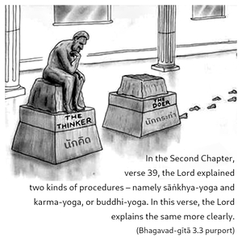
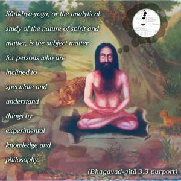
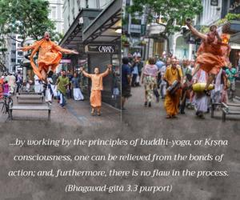
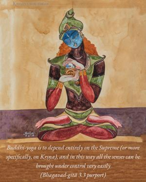
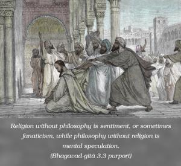
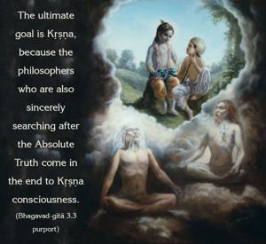

The Supreme Personality of Godhead said: O sinless Arjuna, I have already explained that there are two classes of men who try to realize the self. Some are inclined to understand it by empirical, philosophical speculation, and others by devotional service.






In the Second Chapter, verse 39, the Lord explained two kinds of procedures – namely sāṅkhya-yoga and karma-yoga, or buddhi-yoga. In this verse, the Lord explains the same more clearly. Sāṅkhya-yoga, or the analytical study of the nature of spirit and matter, is the subject matter for persons who are inclined to speculate and understand things by experimental knowledge and philosophy. The other class of men work in Kṛṣṇa consciousness, as it is explained in the sixty-first verse of the Second Chapter. The Lord has explained, also in the thirty-ninth verse, that by working by the principles of buddhi-yoga, or Kṛṣṇa consciousness, one can be relieved from the bonds of action; and, furthermore, there is no flaw in the process. The same principle is more clearly explained in the sixty-first verse – that this buddhi-yoga is to depend entirely on the Supreme (or more specifically, on Kṛṣṇa), and in this way all the senses can be brought under control very easily. Therefore, both the yogas are interdependent, as religion and philosophy. Religion without philosophy is sentiment, or sometimes fanaticism, while philosophy without religion is mental speculation. The ultimate goal is Kṛṣṇa, because the philosophers who are also sincerely searching after the Absolute Truth come in the end to Kṛṣṇa consciousness. This is also stated in the Bhagavad-gītā. The whole process is to understand the real position of the self in relation to the Superself. The indirect process is philosophical speculation, by which, gradually, one may come to the point of Kṛṣṇa consciousness; and the other process is directly connecting everything with Kṛṣṇa in Kṛṣṇa consciousness. Of these two, the path of Kṛṣṇa consciousness is better because it does not depend on purifying the senses by a philosophical process. Kṛṣṇa consciousness is itself the purifying process, and by the direct method of devotional service it is simultaneously easy and sublime.